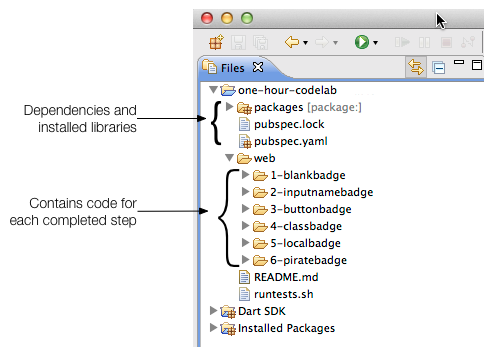

试试 Dart
有点空闲时间？来编写个 Dart 应用吧
在该代码实验室中, 你将从一个框架应用中创建一个海盗徽章生成器。 该示例应用简单的介绍了一些 Dart 语言和库的特性。 该代码实验室假设你具有其他编程语言的背景。
建构该应用！
步骤
Step 0: 设置环境
在该步骤中，你需要下载 Dart 并获取一些实例代码。
下载 Dart。
如果你尚未下载 Dart，
点击下面按钮下载。
解压下载的文件得到一个名称为 dart 的目录。
Dart 工具 可以在最新的这些系统中使用 , , or .
启动编辑器。
打开 dart 目录，双击 DartEditor。
有问题？遇到麻烦了？ 请访问 Dart 编辑器问题指南 页面。
下载示例代码。
下载
示例代码。
解压文件后
得到一个名称为 one-hour-codelab-master 的目录。
打开 the one-hour-codelab-master 示例应用
在 Dart 编辑器中，
使用菜单 File > Open Existing Folder…
打开 one-hour-codelab-master 目录。

关键信息
-
packages目录、pubspec.yaml和pubspec.lock文件是 和项目依赖相关的文件。 该项目已经设置了所有的依赖项了。 Dart 编辑器自动安装需要的包。 -
几个带编号的目录包含了每个步骤中的完整代码。
1-blankbadge包含了框架应用代码，你将从这里开始。6-piratebadge_json包含了最终版本的代码。 -
piratebadge.css文件提供 了所有步骤中需要用到的 CSS 样式文件。 在该示例中你无须修改该文件。
Step 1: 运行框架应用
在该步骤中，你打开源代码文件， 熟悉下 Dart 和 HTML 代码， 然后运行应用。
展开 1-blankbadge 目录。
在 Dart 编辑器中，通过点击目录前面的小箭头
 图标来
展开
图标来
展开 1-blankbadge 目录
这个目录包含两个文件 ：piratebadge.html 和 piratebadge.dart。
打开文件。
通过在 Dart 编辑器中双击 piratebadge.html 和 piratebadge.dart来
打开这两个文件。
浏览代码。
熟悉下框架应用的 Dart 和 HTML 代码。
piratebadge.html
<html>
<head>
<meta charset="utf-8">
<title>Pirate badge</title>
<link rel="stylesheet" href="../piratebadge.css">
</head>
<body>
<h1>Pirate badge</h1>
<div class="widgets">
TO DO: Put the UI widgets here.
</div>
<div class="badge">
<div class="greeting">
Arrr! Me name is
</div>
<div class="name">
<span id="badgeName"> </span>
</div>
</div>
<script type="application/dart" src="piratebadge.dart"></script>
<script src="packages/browser/dart.js"></script>
</body>
</html>
关键信息
-
在该示例中，所有
piratebadge.html文件代码的改动 都在带有widgetsclass 标示的 <div> 元素内完成。 -
在后面的步骤中， 带有
badgeName的 <span> 元素将有 Dart 代码根基用户输入内容 来动态更新。 -
piratebadge.dart脚本是该应用的主要代码文件。 -
packages/browser/dart.js脚本是一个启动脚本， 负责启动 Dart VM 和兼容 不支持 Dart 的浏览器。
piratebadge.dart
void main() {
// Your app starts here.
}
-
该文件是该应用的主要代码文件。 通过
piratebadge.html文件中的 <script> 标签引用代码文件。 -
main()函数是代码入口。 当应用启动的时候 Dart调用该函数。
运行应用。
要在 Dart 编辑器中运行该应用，只需要选择 piratebadge.html
文件并点击 Run 按钮即可。
 .
.

Dart 编辑器将启动 _Dartium_来加载该应用，Dartium 是一个包含 Dart 虚拟机的浏览器。
在左边会看到一个 TO DO 注释， 在右边有个红底白字的徽章。
Step 2: 添加一个输入框
提示： 在该代码实验室中，
你可以继续编辑在1-blankbadge中的文件。
你可以和其他目录的文件比较来确认你的修改，
如果遇到问题也可以恢复这些文件。
在该步骤中，将在应用中添加一个输入框。 当用户在输入框中输入的时候， Dart 代码使用输入的值来更新徽章的内容。
编辑 piratebadge.html.
Add the <input> tag to the HTML code
within the widgets <div>.
...
<div class="widgets">
<div>
<input type="text" id="inputName" maxlength="15">
</div>
</div>
...
关键信息
- 该输入框的 ID 为
inputName。 Dart 使用 CSS 选择器（例如 这个 ID） 来从 DOM 中查询元素。
编辑 piratebadge.dart.
在代码文件顶部
导入 dart:html
(在版权信息下方)。
import 'dart:html';-
该导入语句将导入 dart:html 包中的所有类和资源， 提供了 HTML 元素和访问 DOM 的能力。
-
Dart 编辑器非常乐意的提醒你 导入的内容没有使用。 先不要关心它。在下一步将修复该问题。
在输入框中添加一个监听器来处理输入事件。
void main() {
querySelector('#inputName').onInput.listen(updateBadge);
}
-
在 dart:html 中定义的
querySelector()函数从 DOM 中获取 一个元素。 这里的代码使用 ID#inputName来查询输入框。 -
onInput注册监听输入事件的监听器。 -
当用户点击键盘的时候触发输入事件。
-
你可以使用单引号或者双引号来创建字符串。
-
Dart 编辑器提示你该函数不存在。 现在就创建该函数。
把事件监听函数实现为顶部（top-level）函数。
...
void updateBadge(Event e) {
querySelector('#badgeName').text = (e.target as InputElement).value;
}
-
该函数从输入框中的值设置
badgeName元素的值。 -
可以发现
updateBadge()是一个事件处理函数， 其参数为一个Event对象。 -
产生输入事件的元素为
e.target对象。 -
as关键字把e.target转换为一个InputElement，这样 Dart 编辑器就不会报提醒了。
运行应用。
通过菜单 File > Save All 保存修改的内容。
使用 Dart 编辑器的 Run 按钮
 运行应用。
运行应用。
比较你的应用和如下是否一样。
在输入框中输入内容。
问题？
如果遇到问题，把你修改的代码和 2-inputbadge 中的代码比较一下。
Step 3: 添加一个按钮
在该步骤中，将在应用中添加一个按钮。
当输入框中没有内容的时候按钮启用。
当用户点击按钮的时候，
应用把 Anne Bonney 这个名字输入到徽章中。
编辑 piratebadge.html.
在输入框下方添加 <button> 标签。
...
<div class="widgets">
<div>
<input type="text" id="inputName" maxlength="15">
</div>
<div>
<button id="generateButton">Aye! Gimme a name!</button>
</div>
</div>
...
关键信息
- 该按钮有个 ID
generateButton，这样 Dart 代码就可以通过 ID 获取按钮。
编辑 piragebadge.dart.
在 import 语句下方，定义一个顶级 ButtonElement 变量。
import 'dart:html';
ButtonElement genButton;
-
顶级（Top-level）变量是库级别的名称。
-
ButtonElement 是 dart:html 库中 众多 DOM 元素中的一个。
使用一个事件处理函数把按钮联系起来。
void main() {
querySelector('#inputName').onInput.listen(updateBadge);
genButton = querySelector('#generateButton');
genButton.onClick.listen(generateBadge);
}
onClick注册一个鼠标点击事件。
添加一个顶级函数来修改徽章的名字。
...
void setBadgeName(String newName) {
querySelector('#badgeName').text = newName;
}
- 该函数使用新的名字修改徽章内容。
实现按钮的点击处理函数。
...
void generateBadge(Event e) {
setBadgeName('Anne Bonney');
}
- 该函数设置徽章的名字为
Anne Bonney。
修改 updateBadge() 函数来调用 setBadgeName()函数。
void updateBadge(Event e) {
String inputName = (e.target as InputElement).value;
setBadgeName(inputName);
}
- 设置输入框的值为本地字符串。
在 updateBadge() 中添加一个 if-else 骨架代码。
void updateBadge(Event e) {
String inputName = (e.target as InputElement).value;
setBadgeName(inputName);
if (inputName.trim().isEmpty) {
// To do: add some code here.
} else {
// To do: add some code here.
}
}
-
String类有一些用来处理字符串数据的 函数和属性， 例如trim()和isEmpty。 -
String 类在
dart:core库中定义， 每个 Dart 程序中都会自动导入该库。 -
Dart 具有通用的编程语言概念，例如
if-else。
现在修改 if-else 语句来根据条件改变按钮的状态。
void updateBadge(Event e) {
String inputName = (e.target as InputElement).value;
setBadgeName(inputName);
if (inputName.trim().isEmpty) {
genButton..disabled = false
..text = 'Aye! Gimme a name!';
} else {
genButton..disabled = true
..text = 'Arrr! Write yer name!';
}
}
-
级联操作符 (
..) 可以让你在同一个对象上 操作多个函数和属性。 -
updateBadge()代码用级联操作符来设置 按钮的两个属性。 和下面的代码具 有同样的效果。
genButton.disabled = false; genButton.text = 'Aye! Gimme a name!';
运行应用。
使用菜单 File > Save All 保存文件。
使用 Dart 编辑器中的 Run 按钮
 运行应用。
运行应用。
比较你的应用和如下是否一样。
在输入框中输入文字。 从输入框中删除文字。 点击按钮。
问题？
如果遇到问题，把你的代码和 3-buttonbadge中的代码比较一下。
Step 4: 创建 PirateName 类
在该步骤中，你只需要修改 Dart 代码。 创建一个代表海盗名称的类。 完成后，该类随即的 从一个列表中选择名字和称呼。 或者你也可以在构造函数 中提供名字和称呼。
编辑 piratebadge.dart.
在文件顶部添加一个 import 语句。
import 'dart:html';
import 'dart:math' show Random;
关键信息
-
使用
show关键字来 导入你仅仅需要的类、函数、和属性。 -
Random提供了一个随机数生成器。
在文件底部定义一个类。
...
class PirateName {
}
- 这里定义了类的名字。
创建一个类级别（静态）的 Random 对象。
class PirateName {
static final Random indexGen = new Random();
}
-
static定义一个类变量。这样， 随机数生成器将在所有该类的实例 中共享。 -
Dart 编辑器用斜体字显示静态变量。
-
使用
new来调用构造函数。
Add two instance variables to class, one for the first name and one for the appellation.
class PirateName {
static final Random indexGen = new Random();
String _firstName;
String _appellation;
}
- Private variables start with underscore (
_).
Create two static lists within the class that provide a small collection of names and appellations to choose from.
class PirateName {
...
static final List names = [
'Anne', 'Mary', 'Jack', 'Morgan', 'Roger',
'Bill', 'Ragnar', 'Ed', 'John', 'Jane' ];
static final List appellations = [
'Black','Damned', 'Jackal', 'Red', 'Stalwart', 'Axe',
'Young', 'Old', 'Angry', 'Brave', 'Crazy', 'Noble'];
}
-
finalvariables cannot change. -
Lists are built into the language. These lists are created using list literals.
-
The
Listclass provides the API for lists.
Provide a constructor for the class.
class PirateName {
...
PirateName({String firstName, String appellation}) {
if (firstName == null) {
_firstName = names[indexGen.nextInt(names.length)];
} else {
_firstName = firstName;
}
if (appellation == null) {
_appellation = appellations[indexGen.nextInt(appellations.length)];
} else {
_appellation = appellation;
}
}
}
-
Constructors have the same name as the class.
-
The parameters enclosed in curly brackets (
{and}) are optional, named parameters. -
The
nextInt()function gets a new random integer from the random number generator. -
Use square brackets (
[and]) to index into a list. -
The
lengthproperty returns the number of items in a list. -
The code uses a random number as an index into the list.
Provide a getter for the pirate name.
class PirateName {
...
String get pirateName =>
_firstName.isEmpty ? '' : '$_firstName the $_appellation';
}
-
Getters are special methods that provide read access to an object’s properties.
-
The ternary operator
?:is short-hand for an if-then-else statement. -
String interpolation (
'$_firstName the $_appellation') lets you easily build strings from other objects. -
The fat arrow (
=> expr;) syntax is a shorthand for{ return expr; }.
Modify the function setBadgeName() to use a PirateName instead of a String:
void setBadgeName(PirateNamenewName) { querySelector('#badgeName').text = newName.pirateName; }
- This code calls the getter to get the PirateName as a string.
Change updateBadge() to generate a PirateName based on the input field value.
void updateBadge(Event e) {
String inputName = (e.target as InputElement).value;
setBadgeName(new PirateName(firstName: inputName));
...
}
- The call to the constructor provides a value for one optional named parameter.
Change generateBadge() to generate a PirateName instead of using Anne Bonney.
void generateBadge(Event e) {
setBadgeName(new PirateName());
}
- In this case, the call to the constructor passes no parameters.
Run the app.
使用菜单 File > Save All 保存文件。
Use the Run button
 in Dart Editor to run the app.
in Dart Editor to run the app.
比较你的应用和如下是否一样。
Type in the input field. Remove the text from the input field. Click the button.
问题？
Check your code against the files in 4-classbadge.
Step 5: 保存到本地存储中
In this step, you give the app some persistence by saving the badge name to local storage each time it changes. When you restart the app, it initializes the badge from the saved name.
Edit piratebadge.dart.
Import the JSON converter from the dart:convert library.
import 'dart:html';
import 'dart:math' show Random;
import 'dart:convert' show JSON;
关键信息
JSONprovides convenient access to the most common JSON use cases.
Add a named constructor to the PirateName class.
class PirateName {
...
PirateName.fromJSON(String jsonString) {
Map storedName = JSON.decode(jsonString);
_firstName = storedName['f'];
_appellation = storedName['a'];
}
}
-
The constructor creates a new PirateName instance from a JSON-encoded string.
-
PirateName.fromJsonis a named constructor. -
JSON.decode()parses a JSON string and creates Dart objects from it. -
The pirate name is decoded into a
Mapobject.
Add a getter to the PirateName class that encodes a pirate name in a JSON string.
class PirateName {
...
String get jsonString => '{ "f": "$_firstName", "a": "$_appellation" } ';
}
- The getter formats the JSON string using the map format.
Declare a top-level string.
final String TREASURE_KEY = 'pirateName';
void main() {
...
}- You store key-value pairs in local storage. This string is the key. The value is the pirate name.
Save the pirate name when the badge name changes.
void setBadgeName(PirateName newName) {
if (newName == null) {
return;
}
querySelector('#badgeName').text = newName.pirateName;
window.localStorage[TREASURE_KEY] = newName.jsonString;
}
- Local storage is provided by the browser’s
Window.
Add a top-level function called getBadgeNameFromStorage().
void setBadgeName(PirateName newName) {
...
}
PirateName getBadgeNameFromStorage() {
String storedName = window.localStorage[TREASURE_KEY];
if (storedName != null) {
return new PirateName.fromJSON(storedName);
} else {
return null;
}
}
- The function retrieves the pirate name from local storage and creates a PirateName object from it.
Call the function from the main() function.
void main() {
...
setBadgeName(getBadgeNameFromStorage());
}
- Initialize the badge name from local storage.
Run the app.
使用菜单 File > Save All 保存文件。
Use the Run button
 in Dart Editor to run the app.
in Dart Editor to run the app.
比较你的应用和如下是否一样。
Click the button to put a name on the badge. Start the app again by duplicating this window.
问题？
Check your code against the files in 5-localbadge.
Step 6: Read names from JSON-encoded file
In this step, you change the PirateName class to get the list of names and appellations from a JSON file. This gives you a chance to add more names and appellations to the program.
Create piratenames.json.
Use File > New File… to create a JSON-encoded file
named piratenames.json with the following content.
Put the file in 1-blankbadge alongside the Dart and HTML files you’ve been editing.
{ "names": [ "Anne", "Bette", "Cate", "Dawn",
"Elise", "Faye", "Ginger", "Harriot",
"Izzy", "Jane", "Kaye", "Liz",
"Maria", "Nell", "Olive", "Pat",
"Queenie", "Rae", "Sal", "Tam",
"Uma", "Violet", "Wilma", "Xana",
"Yvonne", "Zelda",
"Abe", "Billy", "Caleb", "Davie",
"Eb", "Frank", "Gabe", "House",
"Icarus", "Jack", "Kurt", "Larry",
"Mike", "Nolan", "Oliver", "Pat",
"Quib", "Roy", "Sal", "Tom",
"Ube", "Val", "Walt", "Xavier",
"Yvan", "Zeb"],
"appellations": [ "Awesome", "Black", "Captain", "Damned",
"Even", "Fighter", "Great", "Hearty",
"Irate", "Jackal", "King", "Lord",
"Mighty", "Noble", "Old", "Powerful",
"Quick", "Red", "Stalwart", "Tank",
"Ultimate", "Vicious", "Wily", "aXe",
"Young", "Zealot",
"Angry", "Brave", "Crazy", "Damned",
"Eager", "Fool", "Greedy", "Hated",
"Idiot", "Jinxed", "Kind", "Lame",
"Maimed", "Naked", "Old", "Pale",
"Queasy", "Rat", "Sandy", "Tired",
"Ugly", "Vile", "Weak", "Xeric",
"Yellow", "Zesty"]}
关键信息
- The file contains a JSON-encoded map, which contains two lists of strings.
Edit piratebadge.html.
Disable the input field and the button.
...
<div>
<input type="text" id="inputName" maxlength="15" disabled>
</div>
<div>
<button id="generateButton" disabled>Aye! Gimme a name!</button>
</div>
...
- The Dart code enables the text field and the button after the pirate names are successfully read from the JSON file.
Edit piratebadge.dart.
Add an import to the top of the file.
import 'dart:html';
import 'dart:math' show Random;
import 'dart:convert' show JSON;
import 'dart:async' show Future;
-
The
dart:asynclibrary provides for asynchronous programming. -
A
Futureprovides a way to get a value in the future.
Replace the names and appellations lists with these static, empty lists:
class PirateName {
...
static List<String> names = [];
static List<String> appellations = [];
...
}
-
Be sure to remove
finalfrom these declarations. -
[]is equivalent tonew List(). -
A List is a generic type—a List can contain any kind of object. If you intend for a list to contain only strings, you can declare it as
List<String>.
Add two static functions to the PirateName class:
class PirateName {
...
static Future readyThePirates() {
var path = 'piratenames.json';
return HttpRequest.getString(path)
.then(_parsePirateNamesFromJSON);
}
static _parsePirateNamesFromJSON(String jsonString) {
Map pirateNames = JSON.decode(jsonString);
names = pirateNames['names'];
appellations = pirateNames['appellations'];
}
}
-
HttpRequestis a utility for retrieving data from a URL. -
getString()is a convenience method for doing a simple GET request that returns a string. -
The code uses a
Futureto perform the GET asynchronously. -
The callback function for
.then()is called when the Future completes successfully. -
When the Future completes successfully, the pirate names are read from the JSON file.
-
readyThePiratesreturns the Future so the main program has the opportunity to do something after the file is read.
Add a top-level variable.
SpanElement badgeNameElement;
void main() {
...
}- Stash the span element for repeated use instead of querying the DOM for it.
Make these changes to the main() function.
void main() {
InputElement inputField = querySelector('#inputName');
inputField.onInput.listen(updateBadge);
genButton = querySelector('#generateButton');
genButton.onClick.listen(generateBadge);
badgeNameElement = querySelector('#badgeName');
...
}
- Stash the span element in the global variable. Also, stash the input element in a local variable.
Then, add the code to get the names from the JSON file, handling both success and failure.
void main() {
...
PirateName.readyThePirates()
.then((_) {
//on success
inputField.disabled = false; //enable
genButton.disabled = false; //enable
setBadgeName(getBadgeNameFromStorage());
})
.catchError((arrr) {
print('Error initializing pirate names: $arrr');
badgeNameElement.text = 'Arrr! No names.';
});
}
-
Call the
readyThePirates()function, which returns a Future. -
When the Future successfully completes, the
then()callback function is called. -
Using underscore (
_) as a parameter name indicates that the parameter is ignored. -
The callback function enables the UI and gets the stored name.
-
If the Future encounters an error the
catchErrorcallback function is called and the program displays an error message, leaving the UI disabled. -
The callback functions for
then()andcatchErrorare defined inline.
Run the app.
使用菜单 File > Save All 保存文件。
Use the Run button
 in Dart Editor to run the app.
in Dart Editor to run the app.
If you want to see what happens when the app can’t find the .json file,
change the file name in the code and run the program again.
Compare your app to the final version running below.
问题？
Check your code against the files in 6-piratebadge_json.
Share your pirate name.
Congratulations! You finished the pirate badge code lab.
Share your pirate name with the world.
Step 7: 继续前行，了解 Dart 语言的更多特性
Think about what you’ve done!
This code lab provided a tour of most Dart language features and many library features. Here’s where to go to learn more.
The Dart language
A Tour of the Dart Language shows you how to use each major Dart feature, from variables and operators to classes and libraries. This code lab introduced the following Dart language features, all of which are covered in more detail in the language tour.
- string interpolation (
'$_firstName the $_appellation') - the cascade operator (
..) - the fat arrow (
=>) function syntax - the ternary operator (
?:) - named constructors (
PirateName.fromJSON(...)) - optional parameters
- a class
- getters
- instance methods and fields
- class level methods and fields
- top-level variables and functions
- typecasting with
as((e.target as InputElement)) - import, and import with
show(import 'dart:math' show Random;) - generics
The Dart libraries
A Tour of the Dart Libraries shows you how to use the major features in Dart’s libraries.
API documentation for classes
String, List, Map, Random, InputElement, ButtonElement, Event, HttpRequest, and Future
API documentation for libraries
dart:core, dart:math, dart:html, dart:async, and dart:convert
API documentation for JSON and local storage
LocalStorage, and JSON
Check out the samples.
Run some Dart programs online and check out the source code on our Samples page.
Read the tutorials.
Learn more about Dart from the Dart tutorials.